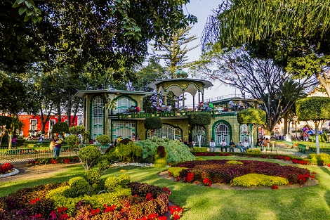

Atlixco
üå∏ Atlixco üå∏
'Pueblo Magico'
¿Donde se ubica?
Se ubica a 25 km de la ciudad de Puebla, capital del Estado y cuenta con dos importantes vías de acceso: la Carretera Federal 190 y la moderna Autopista Vía Atlixcáyotl.

Conocenos

Huey Atlixcayotl

Cada año en el mes de septiembre el municipio muestra lo mejor de su producción a través de su feria regional, y la magia de sus danzas, a través del "Huey Atlixcayotl", la belleza de sus flores, la variada gastronomía de la región y todo lo que un municipio dinámico y progresista ofrece para el desarrollo de su estado y su país.
Atlixco 'de las flores'
Flores
Atlixco es un productor agrícola altamente reconocido a nivel nacional e internacional por su gran variedad y calidad de árboles ornamentales y frutales, así como de plantas y flores para huerto o decoración; así que no dejes pasar la oportunidad de visitar la zona de viveros, en donde encontrarás un paraíso lleno de color y aroma que se presenta en armonía para deleitar a residentes y visitantes de la ciudad.Tapetes
Para las festividades de Dia de Muertos, Semana Santa, entre otras, en la explanada del zocalo de Atlixco se decora con grandes y majestuosos tapetes monumentales.
Cerro de San Miguel
Villa Iluminada

Pueblo Magico